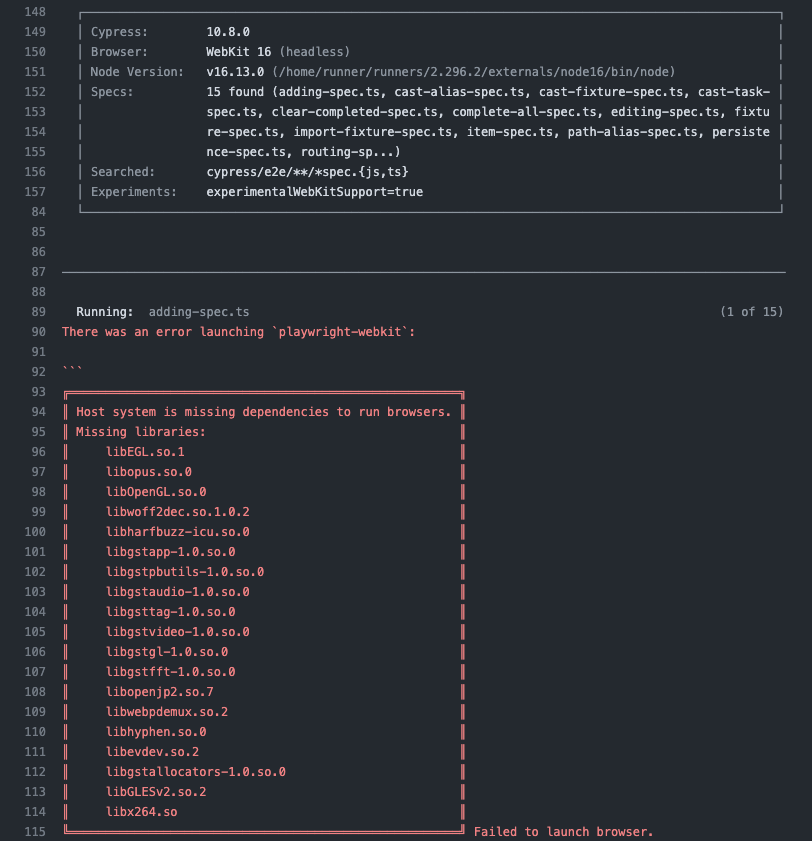

How to efficiently use the newly released WebKit browser support to run Cypress tests locally and on CI.
This blog post shows how to run Cypress tests using WebKit browser (the browser engine behind Safari) on your local machine and on GitHub Actions Linux CI. We will avoid blindly running all tests across the browsers. Instead I prefer to execute all tests on one browser, and run just some tests on other browsers using cypress-grep test tags. For introduction to the Cypress test tags, read the blog post How To Tag And Run End-to-End Tests.
name:ci on: [push] jobs: tests: runs-on:ubuntu-20.04 steps: -name:Checkout uses:actions/checkout@v3 # Install NPM dependencies, cache them correctly # and run all Cypress tests # https://github.com/cypress-io/github-action -name:Cypressrun uses:cypress-io/github-action@v4 with: # check the spec types build:npmrunlint # start the application before running Cypress start:npmrunstart-quiet browser:webkit
We push the code ... and it fails.

No worries, to install those Linux libraries we can use the playwright install-deps webkit command. Let's split our workflow into installing dependencies (OS and NPM), and running Cypress tests.
name:ci on: [push] jobs: tests: runs-on:ubuntu-20.04 steps: -name:Checkout uses:actions/checkout@v3 # Install NPM dependencies, cache them correctly # and run all Cypress tests # https://github.com/cypress-io/github-action -name:Installdependencies uses:cypress-io/github-action@v4 with: # install WebKit browser dependencies build:npxplaywrightinstall-depswebkit runTests:false
-name:Cypressrun uses:cypress-io/github-action@v4 with: # we have already installed everything install:false # check the spec types build:npmrunlint # start the application before running Cypress start:npmrunstart-quiet browser:webkit
Nice, the tests are running on CI using WebKit browser
But do we want to run all of them using WebKit?
Tip: if you are using Windows or Mac machine on CI, you don't need to install any extra dependencies. For example, to run the same tests on Mac machine, use runs-on: mac-latest
.github/workflows/ci-mac.yml
1 2 3 4 5 6 7 8 9 10 11 12 13 14 15 16 17 18 19
name:ci-mac on: [push] jobs: tests: runs-on:macos-latest steps: -name:Checkout uses:actions/checkout@v3 # Install NPM dependencies, cache them correctly # and run all Cypress tests # https://github.com/cypress-io/github-action -name:Cypressrun uses:cypress-io/github-action@v4 with: # check the spec types build:npmrunlint # start the application before running Cypress start:npmrunstart-quiet browser:webkit
Running all tests using Chrome and WebKit and ...
We can run all our end-to-end tests in each supported browser: Chrome, Electron, Edge, Firefox, WebKit. For example, we can use a separate job for each browser:
name:ciallbrowsers on: [push] jobs: tests-chrome: runs-on:ubuntu-20.04 steps: -name:Checkout uses:actions/checkout@v3 # Install NPM dependencies, cache them correctly # and run all Cypress tests # https://github.com/cypress-io/github-action -name:Cypressrun(Chrome) uses:cypress-io/github-action@v4 with: # check the spec types build:npmrunlint # start the application before running Cypress start:npmrunstart-quiet browser:chrome
tests-firefox: runs-on:ubuntu-20.04 steps: -name:Checkout uses:actions/checkout@v3 # Install NPM dependencies, cache them correctly # and run all Cypress tests # https://github.com/cypress-io/github-action -name:Cypressrun(Firefox) uses:cypress-io/github-action@v4 with: # check the spec types build:npmrunlint # start the application before running Cypress start:npmrunstart-quiet browser:firefox # cy.dblclick did not work in headless FF mode headed:true
tests-webkit: runs-on:ubuntu-20.04 steps: -name:Checkout uses:actions/checkout@v3 # Install NPM dependencies, cache them correctly # and run all Cypress tests # https://github.com/cypress-io/github-action -name:Installdependencies uses:cypress-io/github-action@v4 with: # install WebKit browser dependencies build:npxplaywrightinstall-depswebkit runTests:false
-name:Cypressrun(WebKit) uses:cypress-io/github-action@v4 with: # we have already installed everything install:false # check the spec types build:npmrunlint # start the application before running Cypress start:npmrunstart-quiet browser:webkit
All tests pass, but I am not sure what value we get from running all of them across all browsers for every commit, every pull request. We might instead run all of them on one browser (for example, Electron or Chrome), and run just sanity + custom tagged tests on Firefox and on WebKit.
Running tagged tests on WebKit
In my project I am using cypress-grep plugin to process suite and test tags and pick the tests to run. You can see all tests and tags by using find-cypress-specs utility:
cypress/e2e/adding-spec.ts (8 tests) └─ TodoMVC ├─ New Todo [@adding] │ ├─ should allow me to add todo items [@regression] │ ├─ adds new items using a custom command │ ├─ adds items [@sanity, @regression] │ ├─ should clear text input field when an item is added [@regression] │ ├─ should append new items to the bottom of the list │ ├─ should trim text input [@regression] │ └─ should show #main and #footer when items added └─ Adds items (spy example) └─ calls inform
cypress/e2e/cast-alias-spec.ts (1 test) └─ casting an aliased value └─ yields a number
cypress/e2e/cast-fixture-spec.ts (1 test) └─ Use JSON fixture └─ adds todos following the fixture
cypress/e2e/cast-task-spec.ts (1 test) └─ yield data from cy.task └─ gets a number
cypress/e2e/clear-completed-spec.ts (3 tests) └─ TodoMVC └─ Clear completed button [@complete] ├─ should display the correct text ├─ should remove completed items when clicked [@sanity, @regression] └─ should be hidden when there are no items that are completed [@regression]
cypress/e2e/complete-all-spec.ts (3 tests) └─ TodoMVC └─ Mark all as completed [@complete] ├─ should allow me to mark all items as completed [@regression] ├─ should allow me to clear the complete state of all items [@sanity, @regression] └─ complete all checkbox should update state when items are completed / cleared
cypress/e2e/editing-spec.ts (5 tests) └─ TodoMVC └─ Editing [@editing] ├─ should hide other controls when editing ├─ should save edits on blur [@sanity] ├─ should trim entered text ├─ should remove the item if an empty text string was entered └─ should cancel edits on escape
cypress/e2e/fixture-spec.ts (1 test) └─ adds todos following the fixture
cypress/e2e/import-fixture-spec.ts (1 test) └─ Import JSON fixture └─ adds todos following the fixture
cypress/e2e/item-spec.ts (3 tests) └─ TodoMVC └─ Item [@item] ├─ should allow me to mark items as complete [@sanity, @regression] ├─ should allow me to un-mark items as complete [@regression] └─ should allow me to edit an item
cypress/e2e/path-alias-spec.ts (1 test) └─ Source path alias └─ checks the application todos
cypress/e2e/persistence-spec.ts (1 test) └─ TodoMVC └─ Persistence [@persistence] └─ should persist its data [@sanity, @regression]
cypress/e2e/routing-spec.ts (5 tests) └─ TodoMVC └─ Routing [@routing] ├─ should allow me to display active items [@regression] ├─ should respect the back button ├─ should allow me to display completed items [@sanity, @regression] ├─ should allow me to display all items [@regression] └─ should highlight the currently applied filter
cypress/e2e/spec.ts (3 tests) └─ TodoMVC ├─ When page is initially opened [@regression] │ └─ should focus on the todo input field ├─ No Todos │ └─ should hide #main and #footer [@regression] └─ Counter └─ should display the current number of todo items [@sanity, @regression]
cypress/e2e/using-fixture-spec.ts (1 test) └─ Use JSON fixture └─ adds todos following the fixture
We tag tests by feature and level (sanity, regression). We can add a new tag for the tests that we would like to run in WebKit browser in addition to the @sanity set of tests. For example, the editing spec might have a test we would like to always check using WebKit:
it('should save edits on blur', { tags: '@sanity' }, function () { ... })
... })
To run all tests tagged @sanity plus all tests tagged @webkit, the CLI command could be:
1
$ npx cypress run --env grepTags='@sanity @webkit'
Which for the editing spec runs and prints the names of the tests:
Thus we can only add the test tag @webkit to the features that we found to be problematic or broken in WebKit. We run the sanity set of tests plus @webkit tests using WebKit on CI. Let's pass the grepTags to Cypress on CI to do so:
name:citagbrowsers on: [push] jobs: tests-all-chrome: runs-on:ubuntu-20.04 steps: -name:Checkout uses:actions/checkout@v3 # Install NPM dependencies, cache them correctly # and run all Cypress tests # https://github.com/cypress-io/github-action -name:Cypressrun(Chrome) uses:cypress-io/github-action@v4 with: # check the spec types build:npmrunlint # start the application before running Cypress start:npmrunstart-quiet browser:chrome
tests-sanity-firefox: runs-on:ubuntu-20.04 steps: -name:Checkout uses:actions/checkout@v3 # Install NPM dependencies, cache them correctly # and run all Cypress tests # https://github.com/cypress-io/github-action -name:Cypressrun(Firefox) uses:cypress-io/github-action@v4 with: # check the spec types build:npmrunlint # start the application before running Cypress start:npmrunstart-quiet browser:firefox # cy.dblclick did not work in headless FF mode headed:true env:grepTags=@sanity
tests-sanity-plus-webkit: runs-on:ubuntu-20.04 steps: -name:Checkout uses:actions/checkout@v3 # Install NPM dependencies, cache them correctly # and run all Cypress tests # https://github.com/cypress-io/github-action -name:Installdependencies uses:cypress-io/github-action@v4 with: # install WebKit browser dependencies build:npxplaywrightinstall-depswebkit runTests:false
-name:Cypressrun(WebKit) uses:cypress-io/github-action@v4 with: # we have already installed everything install:false # check the spec types build:npmrunlint # start the application before running Cypress start:npmrunstart-quiet browser:webkit env:'grepTags=@sanity @webkit'
You can find the finished CI runs at bahmutov/cypress-webkit-example/actions. Notice 38 tests ran in Chrome, 8 tests in Firefox, and 9 tests in WebKit (there are 8 sanity tests and 1 test tagged @webkit):
Run new and changed specs in all browsers
Running all existing specs in all browsers is wasteful and would not give you much new information. But if you adopt my advice for running any new and changed Cypress specs multiple times to ensure they are solid, you might want to run them in every browser of interest.
1 2 3 4 5 6
# from the branch "FeatureA" changedSpecs=$(npx find-cypress-specs --branch main --parent) # run changed and new specs in default browser npx cypress run --spec ${changedSpecs} # run changed and new specs in WebKit npx cypress run --spec ${changedSpecs} --browser webkit
You can also run the changed specs in WebKit multiple times using the burn parameter supported by cypress-grep, see Burning Tests with cypress-grep blog post.
1 2
# run changed and new specs 5 times in a row in WebKit npx cypress run --spec ${changedSpecs} --browser webkit --env burn=5
A challenge to the readers
I am curious if WebKit support really brings any additional benefits to E2E tests. I doubt that modern browsers are that different when running modern web applications, but who knows. If you find a real issue that was only discovered by running your Cypress tests in WebKit (or Firefox for that matter), let me know, I would like to see it.
Personal note
People who scream "WebKit is not Safari, why Cypress calls it Safari browser support!!!" are not worth arguing with. I am sure they all run their web end-to-end tests by controlling a real mobile Safari browser on a real iOS device. I will ignore any pointless tweets or posts on this particular question.